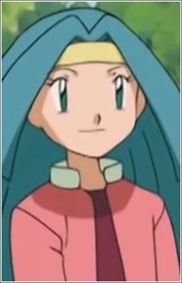

|
Ennis |
- Baccano!
- Baccano! Specials
|
Ennis is one of Szilard Quates' homunculi. She is created with no thoughts of emotions. She is extremely intelligent and observant, a rational thinker. She is able to live in such a manner for some time, toleraing her own existence. She is able to devour immortals, learning what it means to human. Her purpose is to be tool and weapon of a man who can never escape. She fulfill her orders without hesitation. She will sacrifices herself to protect Szilard. |
 |
Greta |
- Pokemon Advanced Generations
|
Greta is Hoenn frontier Brain of the Battle Arena. She is a spirited, tomboyish young girl who is very passionate about Pokemon battles. She specializes in Fighting-Type Pokemon. |
 |
Rinko Koujiro |
- Sword Art Online: Alicization
|
Rinko Koujiro is a scientest, former love interest, and co-worker of Kayaba Akihiko. She studied at the ToTo Institute of Technology in Japan and apart Shigemura Lab. Rinko is a loving and caring person. |
|  |
Samantha |
- Pokemon Advanced Generations
|
Samantha is a performer who routines with ribbons. Samantha owns a Mawile with a lot of romance feelings. |


.jpg)